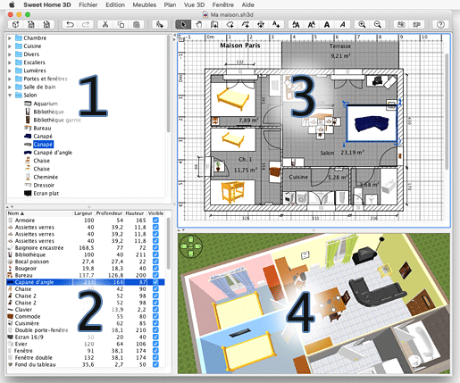
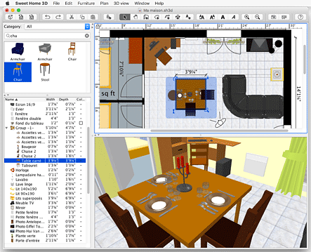

| Ambiente do utilizador do Sweet Home 3D | |||
O Sweet Home 3D edita o interior de uma casa e está dividido em quatro painéis redimensionáveis, descritos a seguir.  |
|
Cada um destes painéis pode estar em foco, e algumas operações propostas pelos menus do Sweet Home 3D dependem do painel em foco, reconhecível pelo retângulo colorido que o rodeia. Para transferir o foco para outro painel, use as teclas Tab e Shift + Tab, ou clique no painel que pretende focar. A barra de ferramentas no topo pode ser movida para fora da janela ou colocada em qualquer um dos quatro lados, simplesmente arrastando-a e largando-a onde pretender, usando o rato. A vista 3D pode ser destacada da sua janela escolhendo Vista 3D > Mostrar em janela separada. As Preferências do utilizador e outros itens dos menus permitem-lhe personalizar o Sweet Home 3D de muitas maneiras. Como a imagem seguinte da mesma casa mostra, o idioma e as unidades usadas no Sweet Home 3D podem ser alteradas, o catálogo de mobília pode ser mostrado como uma lista pesquisável, as colunas na lista de mobília podem ser modificadas, os objectos na planta podem ser vistos de maneira diferente, as teclas de navegação podem ser ocultadas na vista 3D...  |